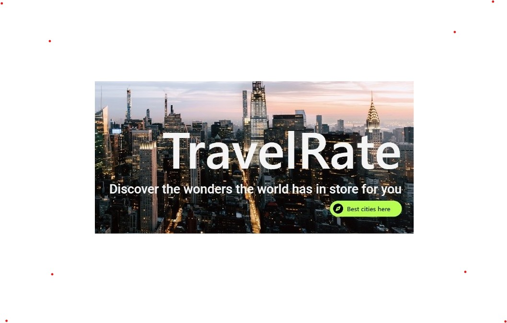
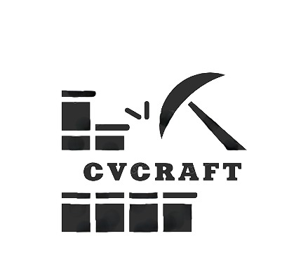
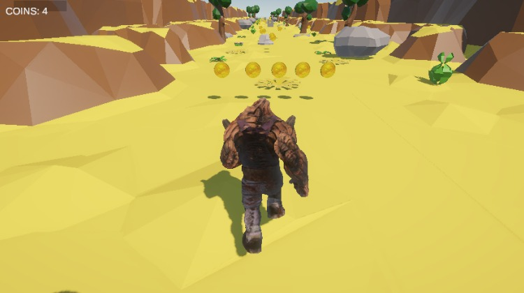
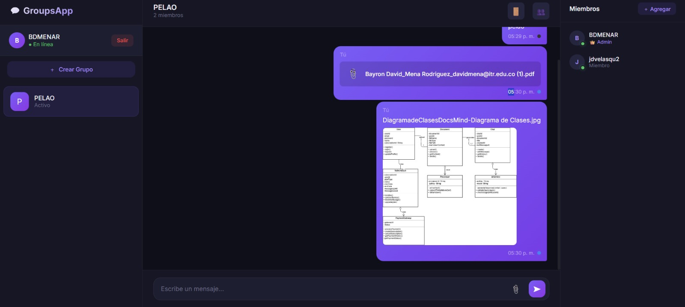

Numerical Solutions
Numerical Solutions es una aplicación web desarrollada para resolver métodos numéricos de manera interactiva. Está dividida en capítulos según los temas cubiertos en el curso y cuenta con una interfaz receptiva y fácil de usar.
Estudiante de Ingeniería de Sistemas
Apasionado por la tecnología y el desarrollo de software. Actualmente en 7° semestre, buscando oportunidades de prácticas profesionales.
Soy estudiante de Ingeniería de Sistemas en la Universidad EAFIT, actualmente cursando mi 7° semestre. Me apasiona el desarrollo de software y la resolución de problemas a través de la tecnología.
Durante mi carrera he trabajado en diversos proyectos que me han permitido desarrollar habilidades tanto técnicas como blandas. Estoy en búsqueda de prácticas profesionales donde pueda aplicar mis conocimientos y seguir creciendo como profesional.
Colaboración efectiva y comunicación asertiva
Capacidad de guiar y motivar equipos
Compromiso con los objetivos y plazos
Persistencia ante los desafíos
Comunicación en entornos internacionales
Algunos de los proyectos que he desarrollado durante mi carrera
Numerical Solutions es una aplicación web desarrollada para resolver métodos numéricos de manera interactiva. Está dividida en capítulos según los temas cubiertos en el curso y cuenta con una interfaz receptiva y fácil de usar.

TravelRate es una aplicacion hecha para viajeros que estan en busca de su proximo destino. Aca puedes crear, calificar y compartir rutas de viaje de las ciudades mas emocionantes y los lugares mas iconicos del mundo con ayuda de IA.

CVCraft es una aplicacion web que le permite a los usuarios filtrar y mejorar sus hojas de vida con base una oferta laboral por medio de IA.

Juego 3D tipo endless runner desarrollado en Unity para la materia de Computación Gráfica. El jugador corre, salta y recolecta monedas a través de segmentos generados proceduralmente con dificultad progresiva. Incluye shaders personalizados, materiales custom y un ambiente LowPoly estilizado.

Plataforma transaccional y analítica para la gestión de clientes prepago. Permite el registro de recargas, administración de perfiles mediante RBAC y evaluación de elegibilidad para migración a postpago mediante un motor de reglas en tiempo real.

Plataforma de mensajería grupal estilo WhatsApp desarrollada para Tópicos Especiales en Telemática. Implementa una arquitectura de microservicios con REST, gRPC y RabbitMQ, desplegada en AWS EKS. Incluye autenticación JWT, notificaciones en tiempo real por WebSocket y escalado automático con Kubernetes.
¿Interesado en trabajar conmigo? ¡Contáctame!